바로찾는 바로드림

모바일로 주문하고
매장에서 바로 픽업
1
모바일에서
바로드림으로
음반 주문
바로드림으로
음반 주문
2
바로드림 존에서
확인
확인
3
상품 바로 수령
- 음반을 직접 찾아 주문 후 바로드림 존에서 확인하거나 1시간 이후 준비된 상품을 받기 중 선택하여 이용할 수 있습니다.
- 매장별 보유 재고와 운영 시간에 따라 수령 시간이 달라질 수 있습니다.
- 전국 핫트랙스 매장에서 이용할 수 있습니다.
광고배너